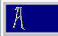
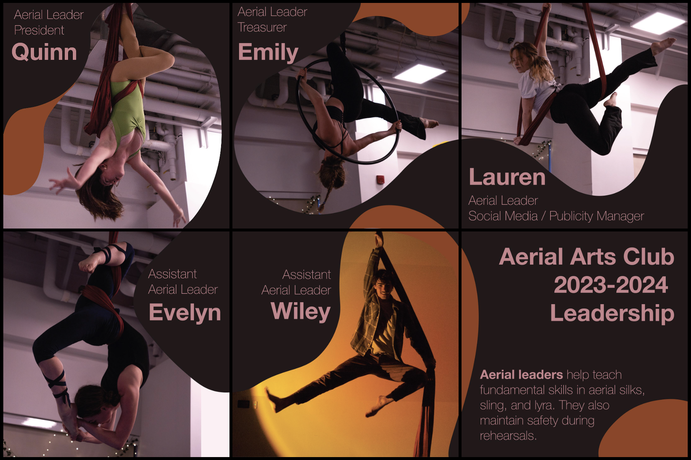
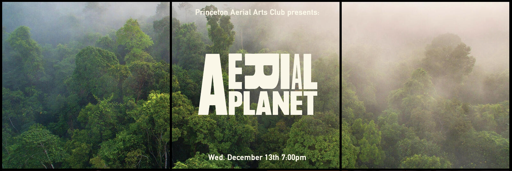
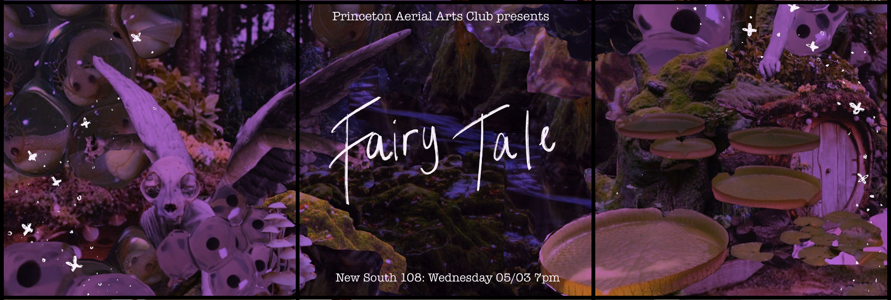
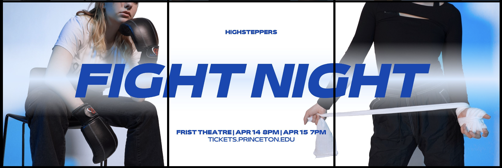
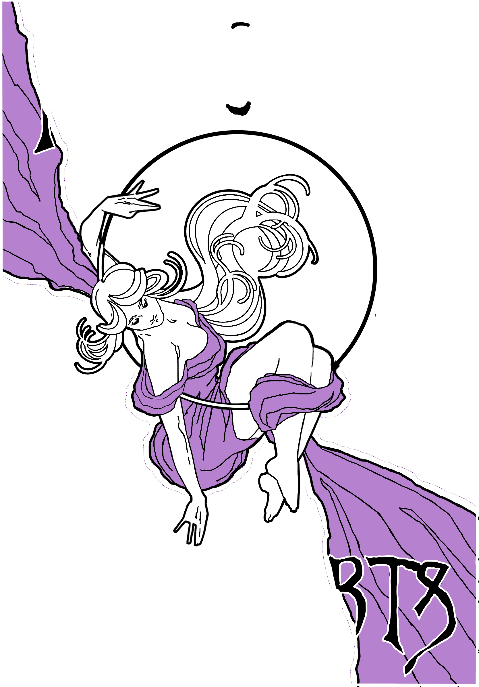
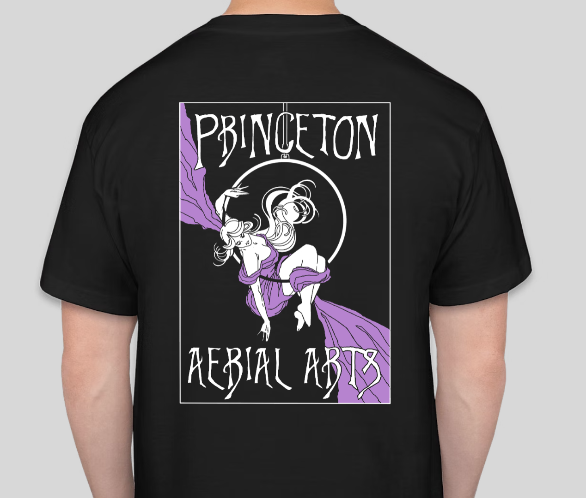

Graphic Design and Social Media Outreach
GRAPHIC DESIGN AND SOCIAL MEDIA OUTREACH
Program: Adobe Photoshop, Illustrator, Premiere Pro, and Procreate
Year: Fall 2022 - present
Description: Designed publicity photos, posters, and Instagram layouts for
Princeton Aerial Arts Club (AAC) and Princeton HighSteppers. Designed club merch
for AAC as well as funny blooper videos for shows.
I design instagram posts and layouts for both AAC and HighSteppers. This includes designing and editting publicity photos for semesterly shows, as well as member shoutouts.




In Fall 2022, I decided to design merch for AAC. I drew the design using Procreate and I ordered shirts for each member.


I also love to make funny videos for each of my dance clubs. These videos are played during the show to fill time during costume changes. I collect clips throughout the semester and edit them together using Premiere Pro.